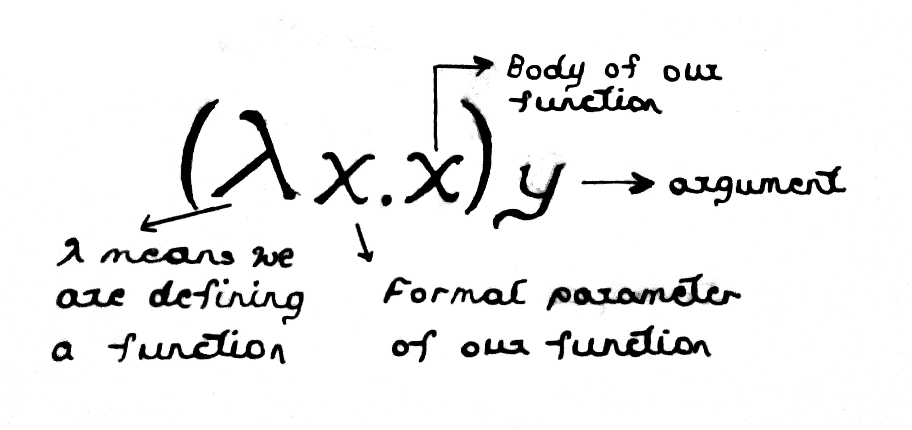
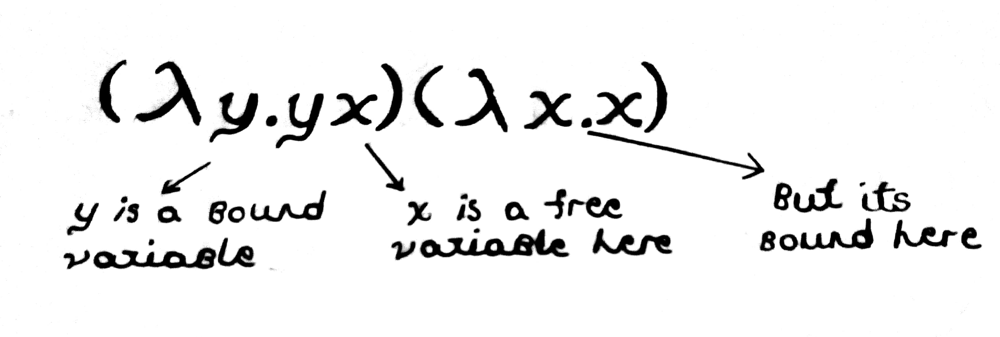
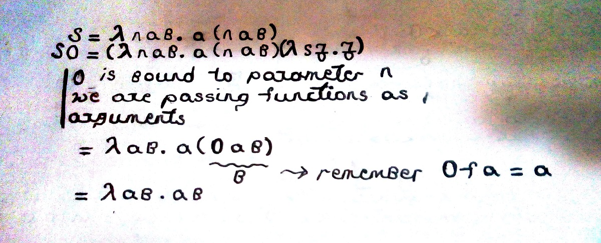

Table of Contents
We'll take a look at λ-calculus, smallest programming language. We'll try to look from a mathematical perspective.
1 Introduction
Let us start this whole thing with the Hello, World! of C++ template metaprograms, computing factorials.
template <int N> struct Factorial { static const int result = N * Factorial<N-1>::result; }; template <> struct Factorial<0> { static const int result = 1; };
When you invoke this code with something like Factorial<2>::result, it will expand as follows
Factorial<2>::result 2 * Factorial<1>::result 2 * 1 * Factorial<0>::result 2 * 1 * 1 2
We should explain couple of technical details for this to sink in, if you are not that good with template mechanism as I am. First notice that we need to use a static variable. Otherwise, we can only access a member using dot notation like
my_class c; c.my_member = 0;
This requires us to create the object first, which can only happen while program is running, ie. runtime. We want to write programs that can be evaluated at compile time. Thus, we want to be use members that can be associated with the type, not with an individual object of that type. This is why we use static members. And why const?
Let's say you instantiated the template
Factorial<2>::result
and got to the expansion
2 * 1 * Factorial<0>::result
If we didn't declared result as static const in Factorial<0> specialization, compiler would not let us instantiate the result outside of the constructor. This means compiler would not let us instantiate the member at compile-time unless it is const. For example, you can do this
int get_one() { return 1; } struct One { static const int result; }; const int One::result = get_one();
but you can't do the following.
int get_one() { return 1; } struct One { static const int result = get_one(); };
Long story short, we use static const variables to force compile-time evaluation of members.
Let's take a look at another example. We can use template metaprogramming to encode natural numbers in the style of Peano. Basically, Peano said we can use 0 and a successor function and this is all we need for natural numbers. Here it is in the code.
struct Zero { static const int value = 0; }; template <typename N> struct Succ { static const int value = N::value + 1; };
Now, Succ<Succ<Zero>> will be evaluated to 2.
Peano actually didn't use 0. He was trying to codify math out of sets, as far as I know, in an attempt to lay solid foundations for mathematics. He said let us start with empty set, \(\emptyset\). We can define a function, call it succ, that takes a set and creates another set which has this given set and all its elements flattened inside.
\[\emptyset = 0\] \[succ(0) = \{ \emptyset \} = 1\] \[succ(1) = \{ \{ \emptyset \}, \emptyset \} = 2\]
Well, I might not be strong on my math history. Peano might not be the one that first codified natural numbers as sets but this successor idea and constructing them out of 0, axioms related to this construction etc. are all Peano's work.
Before diving into lambda calculus implementation, you might want to get your hands a little bit dirty on template metaprogramming. This is especially advised if you had real hardship understanding the above examples. A good online text to learn about it can be found HERE

Figure 1: Guiseppe Peano
We'll now ease into implementing lambda calculus.
2 λ-Calculus
2.1 Fundamental Idea
Lambda Calculus can be considered as the smallest possible programming language. It was discovered by Alonzo Church while he was working on class of computable functions. It can express any computation that a Turing machine can perform. In Raul Rojas words, Rojas2015
It is thus equivalent to Turing machines. However, the λ-calculus emphasizes the use of symbolic transformation rules and does not care about the actual machine implementation. It is an approach more related to software than to hardware.

Figure 2: Alonzo Church
In the simplest case, λ-calculus has two language features; function definition which we can refer as lambda abstraction and function application. It also uses a very minimal syntax to express these two. Here is an example where we show the identity function.

Figure 3: Identity function in λ-Calculus
Observe that paranthesis can be avoided by setting up a convention to associate applications from left to right. With that, we only left with \(\lambda\) and dot as pieces of our syntax. First part, \(\lambda x\), says we are defining an unnamed function that takes a parameter named \(x\). Dot seperates function definition from its body and what follows dot is the body of a function, which in this case just returns the given argument, ie. an identity function. We can apply functions to functions as well.
\[\lambda x.x \lambda x.x \implies \lambda x.x\]
We apply identity function to an identity function in this example. First note that we omitted paranthesis and things just associate to left. Thus, if we were to paranthesise things, same could be written as
\[(\lambda x.x) \lambda x.x \implies \lambda x.x\]
Since identity function returns the argument as is, what we get is identity function again.
Note that we don't have numbers, strings etc. for now. We will take a look into these things as we go along. But, to make it easier for you to think, here is an example function that uses numbers.
\[(\lambda x. x * x)4 \implies 16\]
You can think of that function as a squaring function but in reality, we don't have symbols like 4, * in our system yet. We need to learn how to define those things. The strange things is that you can define all of those fancy computable things with just these two features of λ-calculus.
One important thing is that names are local to definitions and we need to consider what it means to be a free or bound variable.

Figure 4: Free and Bound variables
Look to Raul Rojas' tutorial for more on this issue but I think we can say that a variable is bound if it is dummy in the sense that we can replace its name with any other name in a given context and meaning would not change. In a way, they are already bound to a meaning, they were given meaning before. In the example of identity function \(\lambda x.x\), you can change \(x\) with \(y,z,w\) etc. and it is still the identity function. But, if we have a free variable, it has not a bound meaning still and things will change according to what meaning we give to it. In the function \(\lambda x. yx\), y is a free variable. Say we are working with numbers. If we pass \(2\) as \(y\), we'll have a doubling function but if we pass \(1\), we'll again have an identity function.
Functions are anonymous in λ-Calculus but for convenience, we can give them names when we work with them on paper. For example we can say
\[I = \lambda x.x\]
to give name \(I\) to identity function. We can show application of this function to itself by
\[II = (\lambda x.x) \lambda x.x \implies \lambda x.x = I\]
It is obvious that most important thing about λ-Calculus is that of how we do term or name substitution. It is by these substitution mechanisms that we apply an unnamed function. These are also called reductions. Following example is a little demanding and we will demonstrate couple of important details related to reductions.
Say we have a λ-abstraction given as
\[(λx.(λy.xy))y\]
and we substitute \(y\) for the bound variable \(x\) in the first λ. We will en up with λ-term \((λy.yy)\). This is wrong and the problem is a little subtle. In the inner λ, \(y\) is a name of both a free and a bound variable. These should not be mixed in a one λ-term or we will get different results from the same reduction. To see this, let's change the name of the bound variable in the inner λ. We can change the names of bound variables, remember! Let's rename that \(y\) to \(z\). Now we'll have
\[(λx.(λz.xz))y\]
and now, our result will be \((λz.yz)\). This is clearly different than \((λy.yy)\). If we apply identity function to both, we'll get \(yI\) from the first and \(II\) from the second. The procedure is simple though, whenever you have same name for a bound and a free variable in a λ-term, rename the bound variable before doing any substitution.
Changing the name of bound variables and keeping the meaning of an expression is called an α-conversion$.
Note that, in a way,
\[(λx.(λz.xz))y\]
is a function returning a function and we say that we can pass functions as arguments as well (identity function, remember). Thus, λ-calculus supports higher-order functions. Also, no name in the terms have an associated type. This is an untyped language.
Upto this point, things might have sounded a little vague, huh? This is because we have been using symbols like \(x,y,z \ldots\) that does not refer to anything in our computational context and this makes many things seem abstract. Now, we will start to look into familiar, we'll develop numbers.
We can only define functions in λ-calculus and our nubmers will be functions as well. Let me just throw you their definitions.
2.2 Arithmetic
For the last time, before delving into arithmetic, let us recap what we saw. In our language, we have two semantics; function definition and function application. We call them λ-abstraction and λ-application. We use very minimal syntax to express these features. λ symbol is used to define new unnamed functions and dot is used to seperate parameters from the body. For application, we just chain λ-abstractions. In a way, everything is a λ-abstraction in λ-calculus and thus, everything is a function.
One thing to note is that our functions are actually anonymous. Parameter names are local and only serve the purpose of term substitution. As an example
\[λfx.f(x)\]
seems like a function that takes a function and a parameter, then applies given function to that parameter. Do not let naming conventions fool you. In λ-calculus, everything is a function. \(x\) is a function as much as \(f\) is a function. You might be thinking, since we have local names, our functions are momentarily named. For example;
\[(λfx.f(x))λx.xλx.x\]
show me passing identity function as both arguments. My arguments are still λ-abstractions, unnamed functions. Local names are just there to facilitate name substitution and term rewriting.
\[(λfx.f(x))λx.xλx.x \implies λx.xλx.x\]
When you perform reductions, you will end up with a new λ-abstraction that denotes the result of λ-application. Hope things are a little bit more clear now! Let's move onto arithmetic.
We can only define functions in λ-calculus and our nubmers will be functions as well. Let me just throw you their definitions.
\[λsz.z = 0\] \[λsz.s(z) = 1\] \[λsz.s(s(z)) = 2\] \[λsz.s(s(s(z))) = 3\]
and so on. These are called Church numerals and they are defined this way by Alonzo Church, again.
\(λsz.z\) means this function takes two parameters. So it is actually the function \[λs.(λz.z)\] It is understood that when we write something like \[(λabc.aabb)kl\]
\(k\) will be substituted for \(a\) and \(l\) for \(b\).
We gave these λ-abstractions names. \(1, 2, 3 \ldots\) are actually names of our functions just like we said \(I\) names the identity function. These definitions might seem arbitrary. They are actually modeled after Peano axioms that we mentioned earlier and satisfy the same properties. Another useful thing about these definitions is that we can now use them for looping. Say we apply function \(3\) to another function.
\[ 3fa = λsz.s(s(s(z)))fa = f(f(f(a))) \]
Say \(f\) is identity function and we apply it to \(y\). We'll get
\[λx.x(λx.x(λx.x(y))) = y\] and this is same as \(3Iy\).
\(0fa\) expands into \((λsz.z)fa\) which is just \(a\). Thus, applying a function zero times to an argument leaves the argument unchanged. That is a nice property to have, right?
So, we have numbers and we named them for our convenience by their usual names. Good! Let's now define a useful function called successor. From this function, we expect to get another function and when we give it a number function, we want it to give us the function representation of next number. Take a look at the below figure.

Figure 5: Successor function and successor of 0
If you change \(s\) for \(a\) and \(z\) for \(b\), you'll see that this is just the function \(1\). Pretty neat if you ask me. It is harder to come up with these abstractions as functions though. That is, and this whole thing, is an aspect of Church's genius. Take a look at \(S3\) to let whole thing sink in.
\begin{align} S3 & = & λnab.a(nab)3 \\ & = & λab.a(3ab) \\ & = & λab.a(a(a(a(b)))) \\ & = & 4 \end{align}We are now ready to define addition of natural numbers and this one is not that hard to come up. Addition like \(a + b\) means applying successor function to \(b\), \(a\) times. For example
\[ 2 + 3 = succ(succ(3)) = 5\]
and remember that something like \(3 f a\) means applying \(f\) to \(a\) \(3\) times. With these, you can see that \(a + b = a S b\) which means applying successor function to \(b\), \(a\) times, as we required. You can think of addition function as \(λxy.xSy\). This take two arguments and return their addition. Notice here again that our language is untyped and it is our responsibility to give Church numerals as arguments to this function.
For the multiplication, we need to make couple of observations first. First, show yourself that something like \(2S\) is another function that applies successor to its input two times. This is the idea behind currying, named after the logician Haskell Curry, who also insipred the name of the programming language Haskell.
Currying works by partially applying functions. Take our addition function, \(λxy.xSy\). If we only supply one parameter, say 2, we need to evaluate \((λxy.xSy)2\) which results in \(λy.2Sy\). Thus, \(λy.aSy\) is a function of one parameter that applies \(S\), \(a\) times to its argument. In a way, \(λy.aSy\) can be named increment-by-a function.

Figure 6: Haskell Curry
In mathematics and computer science, currying is the technique of translating the evaluation of a function that takes multiple arguments (or a tuple of arguments) into evaluating a sequence of functions, each with a single argument.
In our addition example, addition is
\[(λxy.xSy)\] and it can be written as an application of two one-parameter function, such as
\[(λy.(λx.xSy)2)3 = 2 + 3\]
This is a nice place to talk about η-conversion. Note that I said \(aS\) is a function that increments its argument \(a\) times. I also showed this function as \(λy.aSy\). These two things are equaivalent and reduction from one to other is called η-conversion.
η-conversion is \(\lambda x.M x \rightsquigarrow M\) when \(M\) does not contain \(x\) free. In a programming analogy, this corresponds to following two functions.
T anonymous-function(T x){ M(x) }
and we say this is just equal to \(M\). In λ-calculus, a λ-abstraction can only be applied. This is the only thing you can do with a λ-abstraction. Thus \(λy.aSy\) can only appear in a program followed by another λ-abstraction, which will be given as an argument to our function.
Say, we want to increment \(x\). We'll write
\[(λy.aSy)x = aSx \implies λy.aSy = aS\]
This is a little subtle, you need to think and observe on your own a little. Now that we know η-conversion, let's learn about two other type of substitutions while we are at it. We saw α-conversion as well, renaming the bound variables.
\[λx.x = λt.t\]
Lastly, we have β-reduction, corresponding to function application and substituting arguments for formal parameters in the body of a function, ie. \((λx.M)N \rightsquigarrow M[x:=N]\).
Meaning of a λ-abstraction is defined by how the expresssion can be reduced. These are the three type of reductions that we can apply and there are also equalities concerning them. For example, if you can reach to one λ-abstraction from other, through β-reductions, we call them β-equivalent.
If we apply this increment-by-a function \(b\) times to \(0\), we'll have
\[\underbrace{a + a + \ldots a}_{b\text{ times}}\]
which is \(axb\). Thus, we can define multiplication as follows.
- \(λx.aSx\) is a function that increments by \(a\)
- \(a \times b\) means applying increment-by-a b times to \(0\).
- Thus, \(λab.(b (λx.aSx))0\) should give \(a \times b\).
There is another way to define multiplication and it is the preferred way. This uses an observation related to how we defined numbers. Our numbers are in the form, if we want to encode integer \(n\)
\[\textrm{N}(n) \equiv λfx.\underbrace{f( \ldots f(f x) \ldots)}_{n\text{ applications}}\]
and observe that something like \(3(2 f)x\) denotes applying \((2 f)\) \(3\) times to \(x\) which will expand into applying \(f\) \(6\) times to \(x\). So we can say,
\[m(n f)x = [m \times n] f x\]
Thus multiplication can be defined as \(λnmfx.n(m f)x\) which is equivalent to λnmf.n(m f)$ by η-conversion. I now advise you to take couple of small examples like \(3 \times 2\) and hand-reduce them to their Church numeral representations using both definitions we gave for multiplication; one using successor function and one using repeated application. See for yourself that they are equivalent.
2.3 Conditionals
We can encode if-else-then like decision making structures in λ-calculus, similar to what we did with numbers.
Bibliography
- [Rojas2015] Raul Rojas, A Tutorial Introduction to the Lambda Calculus, CoRR, abs/1503.09060, (2015). link.